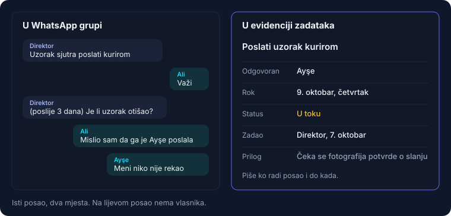
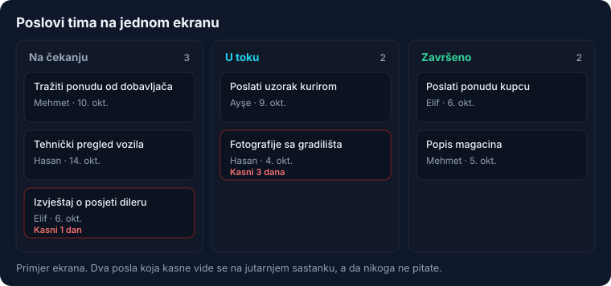

Zašto poslove niko ne prati? Čemu služi softver za upravljanje zadacima
U preduzeću se većina poslova zadaje usmeno. Kaže se u hodniku, zamoli preko telefona, napiše u WhatsApp grupi. Dio zadatih poslova se uradi, dio se zaboravi, a za dio se poslije tri dana pita „šta je bilo s onim?”. Ovaj tekst objašnjava zašto poslove niko ne prati i kako softver za upravljanje zadacima to rješava.

Gdje se posao izgubi?
WhatsApp grupa izgleda zgodno za zadavanje poslova, jer su svi tu. Ali u grupu dnevno stigne sto poruka. Poruka „da pošaljemo onaj uzorak kurirom”, napisana ujutru, do podne ostane visoko iznad ekrana. Svako od troje ljudi koji su je vidjeli misli da se onaj drugi time bavi.
Kod usmeno zadatog posla stvar je još nejasnija. Onaj ko je zadao posao sjeća se da ga je rekao. Onaj ko ga je dobio ne sjeća se do kada se traži ili to nije ni čuo. Nastane rasprava u kojoj su obojica u pravu, i dok se priča ko je šta rekao, posao još nije urađen.

Dešava se i obrnuto: isti posao urade dvije osobe. Kupcu odu dvije različite ponude, dobavljača zovu dva puta. Ko gleda spolja, vidi neuredno preduzeće.
Rukovodiocu dan prođe u provjeravanju
Kad poslovi nijesu nigdje zapisani, praćenje pada na pamćenje rukovodioca. Ujutru prvo svakoga redom pita: je li ponuda otišla, je li vozilo odvezeno na tehnički pregled, jesu li stigle fotografije sa gradilišta? Tako prođe dobar dio dana.
Ovakav način rada ima još jednu posljedicu. Kad rukovodilac zaboravi da pita, zaboravi se i posao. Tim s vremenom nauči da posao za koji se ne pita nije hitan.
Ista praznina nastane kad neko napusti preduzeće ili ode na godišnji odmor. Koji su poslovi na njemu zna samo njegov telefon i njegova glava. Onaj ko ga mijenja kreće od nule, a obećanja data kupcima usput se izgube.
Šta mijenja softver za upravljanje zadacima?
Radi jednostavnu stvar: svaki posao pretvara u zapis. U zapisu su četiri stvari: šta je posao, ko ga radi, do kada, u kom je stanju sada. Kad su ta četiri podatka zapisana, većina navedenih problema nestane sama od sebe.
Osoba koja dobije posao vidi svoju listu na telefonu. Jasno je šta danas treba da uradi i šta kasni. Kad završi posao, označi ga i po potrebi doda fotografiju ili dokument.
Onaj ko zadaje posao ne mora da pita. Otvori ekran i vidi šta je kod koga, šta je završeno, a šta kasni. Jutarnji sastanak je kraći, razgovara se samo o poslovima koji su zapeli.

Tu ulaze i poslovi koji se ponavljaju. Mjesečni popis, nedjeljna posjeta dileru, tehnički pregled vozila, obnova ugovora — takvi poslovi se definišu jednom i na zadati dan sami dođu na listu odgovorne osobe. Više nije ničiji zadatak da ih pamti.
Za timove koji rade na terenu
U poslovima kao što su servis, montaža i terenska prodaja tim veći dio dana provodi napolju. Da biste saznali koliko je od poslova podijeljenih ujutru usmeno urađeno do večeri, čekate da se svi vrate.
Kad zadaci stižu na telefon, terenski tim sa sobom nosi sljedeći posao, adresu i napomenu o kupcu. Kad završi, fotografiše urađeno i po potrebi uzme potpis kupca. Kancelarija to vidi u istom trenutku. Kad kupac pozove, možete reći: „Naša ekipa je otišla prije pola sata, posao je završen.”
Hoće li tim ovo doživjeti kao kontrolu?
Prva reakcija je često takva i treba je shvatiti ozbiljno. Ako sistem koristite samo da vidite ko kasni, tim će vrlo brzo naći način da samo označi i ide dalje.
Pristup koji daje rezultat jeste da sistem prvo olakša posao zaposlenom. Vidjeti svoje poslove na jednoj listi, riješiti se rasprave „meni niko nije rekao”, uredno predati poslove prije odmora — to je olakšanje i za zaposlenog. Kod uvođenja nam je u prvoj nedjelji cilj samo to. Izvještaji i praćenje kašnjenja dolaze kasnije.
Kako početi?
Počnite sa jednim timom i jednim pravilom: posao se smatra zadatim tek kad je upisan u sistem. I posao rečen usmeno ili napisan u grupi naknadno se unosi u sistem. Ako to pravilo izdrži dvije nedjelje, ostalo je lako.
U početku se ne bavite detaljima kao što su kategorija, prioritet ili oznake. Dovoljni su posao, osoba i datum. Kako se tim navikava, dodavaćete polja koja vam zatrebaju.
Izbor alata je velik. Postoje lagane aplikacije koje prate samo zadatke, a postoje i sistemi koji rade zajedno sa zapisima kupaca i ponuda. Ako su vam zadaci vezani za kupca, porudžbinu ili projekat, treba da gledate drugu vrstu (vidi Šta je upravljanje zadacima u CRM-u?). U suprotnom istu informaciju pišete na dva mjesta.
Česta pitanja
Treba li potpuno ostaviti WhatsApp?
Ne. Možete ga i dalje koristiti za dopisivanje. Mijenja se samo to što sam posao ne ostaje u poruci, nego ulazi u evidenciju.
Zar to nije previše za preduzeće od deset ljudi?
Deset ljudi znači trideset-četrdeset različitih poslova dnevno. Jedna osoba ionako ne može sve da drži u glavi. Za tu veličinu jednostavan alat je sasvim dovoljan.
Šta ako ga tim ne koristi?
Ako ga ne koristi rukovodilac, neće ni tim. Kad se poslovi zadaju kroz sistem i status se prati u sistemu, navika se stvori za nekoliko nedjelja.
Povezane usluge: upravljanje zadacima i aplikacija za terenske timove, konsalting za digitalnu transformaciju.
Šablon za praćenje zadataka
Ko, šta i do kada; zakašnjeli posao crven, pregled po osobi. Besplatan Excel šablon.
Pogledaj šabloneUčinimo poslove vašeg tima vidljivim
Popišimo zajedno kako se poslovi danas zadaju i prate.
Razgovarajmo o vašem projektu